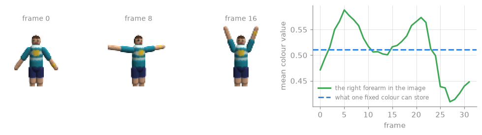
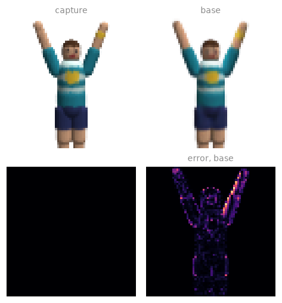
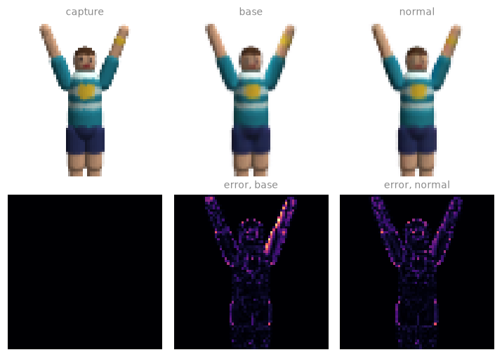
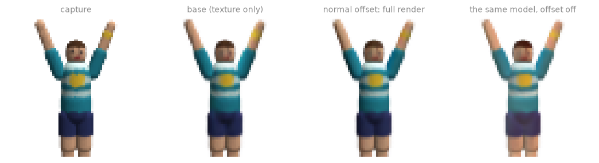
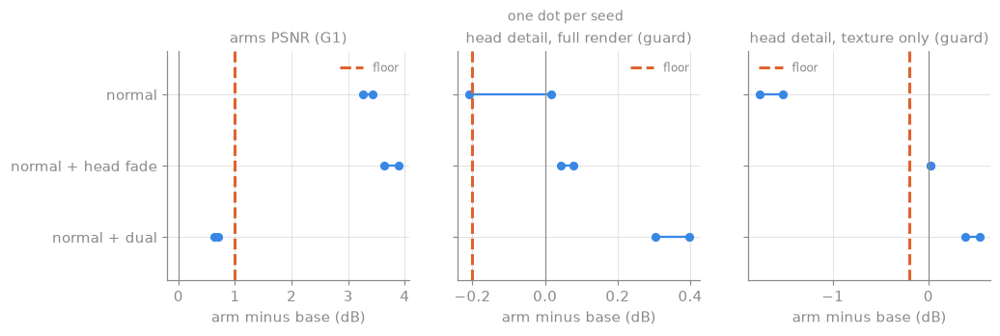
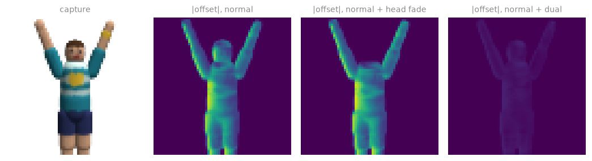

Colour that depends on pose, and what fixing it can cost#
What you will learn
Why one fixed colour per Gaussian is wrong as soon as the light does not move with the body, and where the error shows up.
How a small network adds a colour offset per Gaussian from the posed surface normal, and why the normal is a better input than the pose.
How to check what else such an offset changes: region scores, a detail score, and a guard that is written down before the runs.
What the real project found over three rounds of this experiment, including the parts that failed.
Prerequisites: Lesson 3b (skinning maps),
Lesson 5a (cu.fit), Lesson 6a (region
scores) and, for the last sections, the idea of seed spread from
Lesson 8a.
1. The same skin, a different colour#
So far the toy actor had no lighting: every surface point had one colour in every frame. Real footage is lit. The simplest model of a matte surface under one distant light is
where \(a_i\) is the surface’s own colour (its albedo), \(n_i(\theta)\) is the unit normal of point \(i\) in
pose \(\theta\), \(l\) is the direction to the light and \(\lambda\) sets how strong the shading is.
cu.ToyActor(lighting=0.6) shades its Gaussians this way, with a light that is fixed in the world, above
and slightly in front.
The light does not move, and the body does. Raise an arm, and the skin that faced sideways now faces the light.
actor = cu.ToyActor(lighting=0.6)
poses, trans = cu.motion("arms_up", 32)
cam = cu.orbit_camera(0, radius=3.4, target=(0, 1.25, 0), size=64) # a mid shot: the arms stay in frame
capture = cu.make_video(actor, poses, trans, cam=cam)
# mean colour of the right forearm, as the camera sees it, in every frame
brightness = []
for t in range(32):
forearm = hifi.part_mask(actor, cam, poses[t], trans[t], ("r_forearm",))
brightness.append(float(capture.frame(t)[forearm].mean()))
fig = plt.figure(figsize=(9.0, 2.6))
for k, t in enumerate((0, 8, 16)):
ax = fig.add_subplot(1, 5, k + 1); ax.imshow(cu.to_np(capture.frame(t))); ax.set_axis_off()
ax.set_title(f"frame {t}", fontsize=9)
ax = fig.add_subplot(1, 5, (4, 5))
ax.plot(brightness, color=cu.COLORS["truth"], label="the right forearm in the image")
ax.axhline(float(np.mean(brightness)), color=cu.COLORS["gaussian"], ls="--", label="what one fixed colour can store")
ax.set_xlabel("frame"); ax.set_ylabel("mean colour value"); ax.legend(fontsize=8)
fig.tight_layout()
assert max(brightness) > 1.15 * min(brightness)

The forearm is the same skin throughout. Its colour in the image changes by a large factor over the motion.
2. A fixed texture stores the average#
The shell avatar of Parts 4 and 5 has one texture. Each Gaussian reads one colour from it, whatever the pose. Fitted to a video in which the true colour of a point varies, the best a single value can do is sit in the middle (the dashed line above). The error that remains is \(a_i\,\big(s(n_i(\theta)) - \bar s_i\big)\): zero for points whose normal never changes, large for points whose normal swings through the light. In this motion those are the arms.
We fit the plain avatar to the even frames and score it on two held-out sets: the odd frames of the same motion (near poses) and frames of two other motions (far poses). Scores are taken inside fixed region masks, rendered from the capture’s own geometry, so every model is scored on the same pixels.
train, near = capture.subset(range(0, 32, 2)), capture.subset(range(1, 32, 2))
far = hifi.concat_videos(*[cu.make_video(actor, *cu.motion(m, 8), cam=cam) for m in ("dance", "wave")])
masks = {"near": hifi.region_masks(actor, near), "far": hifi.region_masks(actor, far)}
ITERS = 80
def new_avatar(seed):
return cu.ShellAvatar(density=500.0, tex_res=(24, 32), seed=seed)
def score(model):
out = {}
for name, video in (("near", near), ("far", far)):
s = hifi.region_scores(model, video, masks[name])
out.update({f"{name} {k}": v for k, v in s.items()})
return out
runs, models = {}, {}
t0 = time.perf_counter()
models["base", 0] = new_avatar(0)
cu.fit(models["base", 0], train, iters=ITERS, seed=0)
runs["base", 0] = score(models["base", 0])
print(f"fit and score: {time.perf_counter() - t0:.0f} s")
def show_errors(names, t=7, video=None):
video = near if video is None else video
target = video.frame(t)
renders = [models[n, 0].render(video.cams[t], video.poses[t], video.trans[t])[0].detach() for n in names]
cu.show_images([target] + renders + [torch.zeros(64, 64)] + [(r - target).abs().mean(-1) for r in renders],
["capture"] + list(names) + [""] + [f"error, {n}" for n in names], ncols=len(names) + 1,
size=2.2, vmax=0.3)
show_errors(["base"])
b = runs["base", 0]
print("held-out PSNR (near poses): " + " ".join(f"{r} {b[f'near psnr_{r}']:.1f} dB" for r in ("arms", "head", "shirt")))
assert b["near psnr_arms"] < b["near psnr_shirt"] - 3.0, "the error should sit on the arms"
fit and score: 2 s
held-out PSNR (near poses): arms 23.1 dB head 24.9 dB shirt 28.7 dB

The error map is dark almost everywhere and bright on the raised arms. The region scores say the same: the arms are several decibels below the shirt. The texture is not blurred here, and no pose is wrong. The model cannot represent the thing being asked of it.
3. A colour offset from the posed normal#
The fix follows the cause. The colour should be allowed to depend on the pose, through the quantity that physically matters: the direction the surface faces. Each Gaussian keeps its texture colour and gets an additive offset from a small network \(f_\phi\):
\(\rho\) bounds the size of the offset and \(m_i \in [0, 1]\) is a per-Gaussian mask (1 everywhere for now). The network is shared by all Gaussians and starts at zero, so training starts from the plain avatar. This is the form ExAvatar [Moon et al., 2024] uses for its pose-dependent colour, reduced to its smallest version.
The posed normal comes from skinning. A Gaussian’s rest normal is the third column of its rest frame, and the blended skinning map \(M_i = \sum_j w_{ij} A_j\) of Lesson 3b turns it:
def posed_normals(avatar, pose, trans):
A, _ = cu.skinning_transforms(pose, trans)
M = torch.einsum("nj,jab->nab", avatar.weights, A[:, :3, :3]) # rotation part of the blend
n = torch.einsum("nab,nb->na", M, avatar.rest_frame[:, :, 2])
return n / n.norm(dim=-1, keepdim=True)
av = models["base", 0]
n_mine = posed_normals(av, poses[16], trans[16])
assert torch.allclose(n_mine, hifi.posed_normals(av, poses[16], trans[16]), atol=1e-6)
# the capture's shading is a function of exactly this normal (the actor has weights and a rest frame too)
light = torch.tensor(cu.toy_data.LIGHT_DIR)
light = light / light.norm()
shade = 1 - actor.lighting + 1.4 * actor.lighting * (posed_normals(actor, poses[16], trans[16]) @ light).clamp(min=0)
captured = actor.gaussians(poses[16], trans[16])[2]
error = float((captured - (actor.colors * shade[:, None]).clamp(0, 1)).abs().max())
print(f"capture colours vs. albedo x s(n) from our normals: largest difference {error:.1e}")
assert error < 1e-4
capture colours vs. albedo x s(n) from our normals: largest difference 1.2e-07
hifi.ColourOffset is the network (two hidden layers of 32 units) and hifi.WithOffset adds its output to
the avatar’s colours before rendering. The texture and the network train together; the network gets a
smaller learning rate through extra_params.
def fit_arm(name, seed, cond="normal", n_feat=0, fade=None):
avatar = new_avatar(seed)
offset = hifi.ColourOffset(avatar, cond=cond, n_feat=n_feat, seed=seed,
fade=None if fade is None else hifi.head_fade(avatar, fade))
model = hifi.WithOffset(avatar, offset)
cu.fit(model, train, iters=ITERS, seed=seed, extra_params=list(offset.parameters()))
models[name, seed], runs[name, seed] = model, score(model)
t0 = time.perf_counter()
fit_arm("normal", 0)
print(f"fit and score: {time.perf_counter() - t0:.0f} s")
show_errors(["base", "normal"])
for split in ("near", "far"):
gain = runs["normal", 0][f"{split} psnr_arms"] - runs["base", 0][f"{split} psnr_arms"]
print(f"arms, {split} poses: {runs['base', 0][f'{split} psnr_arms']:.1f} -> "
f"{runs['normal', 0][f'{split} psnr_arms']:.1f} dB ({gain:+.1f})")
assert gain > 1.5
fit and score: 2 s
arms, near poses: 23.1 -> 26.3 dB (+3.3)
arms, far poses: 22.8 -> 25.0 dB (+2.2)

The bright error on the arms is gone, and the arms gain several decibels. The gain holds on the far poses, from motions the fit never saw. That is the mark of a model that has learned the cause and not the frames: a surface that faces the light is bright, in any pose.
Normal or pose?#
The offset could be conditioned on the body pose \(\theta\) instead, or as well. That is the more general input: anything that depends on the pose, such as a shadow cast by one limb on another, is a function of \(\theta\) and not of the local normal. A pose input needs one more ingredient. The pose is the same for all Gaussians of a frame, so the network also gets a learned feature vector per Gaussian, or it could only shift every colour by the same amount.
t0 = time.perf_counter()
fit_arm("pose", 0, cond="pose", n_feat=8)
print(f"fit and score: {time.perf_counter() - t0:.0f} s")
for name in ("normal", "pose"):
print(f"{name:7s} arms gain over base: " + ", ".join(
f"{split} {runs[name, 0][f'{split} psnr_arms'] - runs['base', 0][f'{split} psnr_arms']:+.1f} dB"
for split in ("near", "far")))
assert runs["normal", 0]["near psnr_arms"] > runs["pose", 0]["near psnr_arms"] + 1.0
fit and score: 2 s
normal arms gain over base: near +3.3 dB, far +2.2 dB
pose arms gain over base: near +0.5 dB, far +0.4 dB
In the same number of steps the pose route recovers a small part of what the normal route recovers. It has to discover, per Gaussian and from sixteen frames, a relation that the normal hands over directly. The real study reached the same conclusion by a different test (replacing the pose input by a shuffled pose changed nothing once the normal was present) and dropped the pose input after its first round.
4. What else did the offset change?#
A gain of several decibels on the arms is the kind of result that gets adopted on the spot. Before that, ask what the new component is able to do, apart from what it was built for.
The loss supervises one thing: the sum of texture colour and offset. Nothing says which of the two should hold what. The offset network is shared by the whole body, sees only a normal, and is additive, so dark hair and pale skin with the same normal get the same change. During training the texture underneath is free to shift, to make the sum come out right on the training poses.
So two things can go wrong outside the arms. The full render can change on regions that had no problem. And the texture can stop being a picture of the person, because part of the picture has moved into the network. We measure both, with two tools from Lesson 6a and one new one:
region scores inside fixed masks (head, shirt);
the render without the offset (
use_offset=False), which shows what the texture alone now holds;a detail score, since a shift of tone and a loss of structure are different harms.
hifi.detail_psnrcompares the high-pass parts of two images (each image minus its own 5 px blur).
target, plain = near.frame(7), models["base", 0].render(near.cams[7], near.poses[7], near.trans[7])[0].detach()
m_head = masks["near"]["head"][7].float()
blurred = torch.nn.functional.avg_pool2d(plain.permute(2, 0, 1)[None], 3, 1, 1)[0].permute(1, 2, 0)
shifted = plain - 0.08 # every pixel darker by the same amount
print("head region, base model PSNR detail PSNR")
rows = {}
for name, img in (("as rendered", plain), ("darker by 0.08 (tone only)", shifted), ("3 px box blur (structure)", blurred)):
rows[name] = (cu.psnr(img, target, m_head), hifi.detail_psnr(img, target, m_head))
print(f" {name:28s} {rows[name][0]:7.1f} {rows[name][1]:10.1f}")
assert rows["darker by 0.08 (tone only)"][0] < rows["as rendered"][0] - 2.0 # PSNR sees the tone shift
assert abs(rows["darker by 0.08 (tone only)"][1] - rows["as rendered"][1]) < 0.3 # the detail score does not
assert rows["3 px box blur (structure)"][1] < rows["as rendered"][1] - 3.0 # but it sees the blur
head region, base model PSNR detail PSNR
as rendered 27.5 27.4
darker by 0.08 (tone only) 21.2 27.4
3 px box blur (structure) 17.5 17.5
Plain PSNR falls for both damaged renders, so it cannot say which kind of harm it is looking at. The detail score ignores the uniform shift and falls for the blur. Reported together, the two columns separate “the tone moved” from “structure was lost”.
Now look at the model of Section 3 with its offset switched off.
def texture_only(model, video=None, mask_set="near"):
video = near if video is None else video
return hifi.region_scores(model, video, masks[mask_set], use_offset=False)
t = 7
frame = lambda model, **kw: model.render(near.cams[t], near.poses[t], near.trans[t], **kw)[0].detach()
cu.show_images([near.frame(t), frame(models["base", 0]), frame(models["normal", 0]),
frame(models["normal", 0], use_offset=False)],
["capture", "base (texture only)", "normal offset: full render", "the same model, offset off"], size=2.4);
base_s, off_s = runs["base", 0], texture_only(models["normal", 0])
print("texture alone, held-out near poses base with offset trained")
for col in ("psnr_head", "detail_head", "psnr_shirt", "detail_shirt"):
print(f" {col:14s} {base_s['near ' + col]:27.1f} {off_s[col]:10.1f} dB")
assert off_s["detail_head"] < base_s["near detail_head"] - 0.7
assert off_s["psnr_shirt"] < base_s["near psnr_shirt"] - 3.0
texture alone, held-out near poses base with offset trained
psnr_head 24.9 20.2 dB
detail_head 25.1 23.4 dB
psnr_shirt 28.7 19.7 dB
detail_shirt 29.6 28.1 dB

The full render looks fine. The texture underneath does not: with the offset off, the whole figure has the wrong tone, and the head and the shirt have lost detail score as well as PSNR. The texture of the base model was a picture of the person under average light. The texture of the offset model is a picture of the person minus whatever the network adds, and the network adds something almost everywhere. Part of the image has been absorbed into the offset.
Does that matter, if the two are always used together? It matters whenever they are not:
when the offset is masked, faded or replaced on some part after training;
when the network is asked about normals or poses it has not seen, and its answer is wrong: the error is then added to a texture that is itself wrong;
for every tool that reads the texture directly, such as the inpainting of unseen surfaces.
The first case is one line to try. Take the trained model and switch the offset off on the head:
model = models["normal", 0]
before = hifi.region_scores(model, near, masks["near"])
trained_fade = model.offset.fade.clone()
model.offset.fade.copy_(hifi.head_fade(model.avatar, "hard")) # mask the head after training
after = hifi.region_scores(model, near, masks["near"])
model.offset.fade.copy_(trained_fade) # restore
print(f"head PSNR of the full render: {before['psnr_head']:.1f} dB -> {after['psnr_head']:.1f} dB with the head masked afterwards")
assert after["psnr_head"] < before["psnr_head"] - 1.5
head PSNR of the full render: 24.7 dB -> 19.5 dB with the head masked afterwards
The head falls by several decibels. A mask has to be part of training, so that the texture under the mask learns to stand alone.
Mitigations#
Three ways to keep the offset in its place, all available in hifi:
Mask or fade the offset on a part during training.
hifi.head_fadesets \(m_i = 0\) on the head and ramps it over the neck. The head texture is then trained as in the base model.Dual supervision. Also train the render without the offset against the frame, so the texture alone must still explain the image and the offset is left with what a fixed colour cannot do (
hifi.OffsetRegulariser(w_plain=...)).Smoothness. Penalise differences of the offset between neighbouring Gaussians, so that it cannot paint fine structure (
hifi.OffsetRegulariser(w_smooth=...); Exercise 2).
Each has a cost, and one run cannot rank them. So this is the place for a rule.
A guard, registered before the runs#
With two splits, three regions and two kinds of render there are enough columns to support any story after the fact. The pass/fail columns, the floors and the arms are therefore fixed first (Lesson 8b).
RULE = {
"seeds": [0, 1],
"delta": "arm minus base, same seed, held-out frames",
"counted": "same sign on both seeds, |mean| above the spread between seeds, both |values| above a floor",
"G1_gain": {"column": "near psnr_arms", "floor_dB": 1.0},
"guards": {"full render": ["near psnr_head", "far psnr_head", "near detail_head", "far detail_head"],
"texture only": ["near detail_head (offset off)"], "floor_dB": 0.2},
"verdict": "PASS only if G1 is a counted gain and no guard column is a counted loss",
"arms": {"normal": "offset from the normal, everywhere",
"normal + head fade": "the same, off on the head and faded over the neck, during training",
"normal + dual": "the same as 'normal', plus the offset-free render supervised with weight 1"},
}
print("rule registered, sha256", hashlib.sha256(json.dumps(RULE, sort_keys=True).encode()).hexdigest()[:16])
GUARDS = RULE["guards"]["full render"] + RULE["guards"]["texture only"]
def columns(arm, seed):
out = dict(runs[arm, seed])
out["near detail_head (offset off)"] = runs[arm, seed]["near detail_head"] if arm == "base" \
else texture_only(models[arm, seed])["detail_head"]
return out
def judge(arm):
delta = {c: [columns(arm, s)[c] - columns("base", s)[c] for s in RULE["seeds"]]
for c in [RULE["G1_gain"]["column"]] + GUARDS}
g1 = delta[RULE["G1_gain"]["column"]]
gain = hifi.counted(g1, RULE["G1_gain"]["floor_dB"]) and sum(g1) > 0
lost = [c for c in GUARDS if hifi.counted(delta[c], RULE["guards"]["floor_dB"]) and sum(delta[c]) < 0]
return {"gain": gain, "guard losses": lost, "verdict": "PASS" if gain and not lost else "FAIL", "delta": delta}
rule registered, sha256 f294639fe0e79366
def fit_dual(name, seed, w_plain=1.0):
avatar = new_avatar(seed)
offset = hifi.ColourOffset(avatar, seed=seed)
model = hifi.WithOffset(avatar, offset)
reg = hifi.OffsetRegulariser(model, train, w_plain=w_plain, seed=seed)
cu.fit(model, train, iters=ITERS, seed=seed, extra_params=list(offset.parameters()), extra_loss=reg)
models[name, seed], runs[name, seed] = model, score(model)
t0 = time.perf_counter()
models["base", 1] = new_avatar(1)
cu.fit(models["base", 1], train, iters=ITERS, seed=1)
runs["base", 1] = score(models["base", 1])
fit_arm("normal", 1)
for seed in RULE["seeds"]:
fit_arm("normal + head fade", seed, fade="fade")
fit_dual("normal + dual", seed)
print(f"six more fits: {time.perf_counter() - t0:.0f} s\n")
verdicts = {arm: judge(arm) for arm in RULE["arms"]}
print(f"{'arm minus base, seed 0 / seed 1 (dB)':34s}" + "".join(f"{a:>22s}" for a in RULE["arms"]))
for c in [RULE["G1_gain"]["column"]] + GUARDS:
print(f"{c:34s}" + "".join(f"{verdicts[a]['delta'][c][0]:+12.2f} /{verdicts[a]['delta'][c][1]:+6.2f} " for a in RULE["arms"]))
print()
for a, v in verdicts.items():
print(f"{a:20s} G1 counted gain: {v['gain']!s:5s} counted guard losses: {v['guard losses'] or 'none'} -> {v['verdict']}")
assert verdicts["normal"]["gain"] and verdicts["normal + head fade"]["gain"]
assert "near detail_head (offset off)" in verdicts["normal"]["guard losses"] and verdicts["normal"]["verdict"] == "FAIL"
six more fits: 13 s
arm minus base, seed 0 / seed 1 (dB) normal normal + head fade normal + dual
near psnr_arms +3.25 / +3.43 +3.63 / +3.89 +0.63 / +0.70
near psnr_head -0.26 / +0.31 -0.04 / +0.07 +0.58 / +0.59
far psnr_head -0.35 / +0.14 +0.00 / +0.10 +0.47 / +0.29
near detail_head -0.09 / +0.21 +0.06 / +0.04 +0.48 / +0.62
far detail_head -0.21 / +0.02 +0.08 / +0.04 +0.40 / +0.30
near detail_head (offset off) -1.77 / -1.52 +0.02 / +0.02 +0.38 / +0.53
normal G1 counted gain: True counted guard losses: ['near detail_head (offset off)'] -> FAIL
normal + head fade G1 counted gain: True counted guard losses: none -> PASS
normal + dual G1 counted gain: False counted guard losses: none -> FAIL
fig, axes = plt.subplots(1, 3, figsize=(10.0, 2.8), sharey=True)
panels = ((RULE["G1_gain"]["column"], "arms PSNR (G1)", RULE["G1_gain"]["floor_dB"]),
("far detail_head", "head detail, full render (guard)", -RULE["guards"]["floor_dB"]),
("near detail_head (offset off)", "head detail, texture only (guard)", -RULE["guards"]["floor_dB"]))
for ax, (col, title, floor) in zip(axes, panels):
for i, a in enumerate(RULE["arms"]):
d = verdicts[a]["delta"][col]
ax.plot(d, [i, i], "o-", color=cu.COLORS["gaussian"], lw=1.5)
ax.axvline(0, color=cu.plotting.INK, lw=0.8)
ax.axvline(floor, color=cu.COLORS["error"], ls="--", label="floor")
ax.set_title(title, fontsize=10); ax.set_xlabel("arm minus base (dB)"); ax.legend(fontsize=8)
axes[0].set_yticks(range(len(RULE["arms"]))); axes[0].set_yticklabels(list(RULE["arms"]))
axes[0].set_ylim(len(RULE["arms"]) - 0.4, -0.6)
fig.suptitle("one dot per seed", fontsize=9, color=cu.plotting.INK, y=1.02);

Read the table by the rule, column by column.
The plain normal offset fails. Its gain on the arms is large and counted. Its texture-only guard is a counted loss on both seeds, by a wide margin. The cell asserts both. Had we looked at the arms column alone, this arm would have been adopted.
Its full-render head columns are a different kind of evidence. They move by tenths of a decibel, about the size of the scatter between seeds, and not always in the same direction. Whether the rule counts any of them can change from build to build. Columns like these are why the floor and the two-seed condition exist: without them, each could be told as “a small head loss” or as “no change”.
The head fade keeps the arms gain and, by construction, leaves the head texture to stand alone, so the texture-only guard has nothing to count. In our builds it passed; check the verdict your build printed. What the table does not show is its price, which is in the next figure.
Dual supervision keeps the texture intact and gives back most of the arms gain. With the gain floor of this rule it does not qualify. This is not a matter of training length: more steps did not close the gap in our runs (Exercise 1). A plausible reading, which this lesson does not test: the network sees only the normal, an arm needs an offset where a torso point with the same normal needs none, and the texture drift of the plain arm was how the two demands were reconciled. Forbid the drift, and the many torso pixels outvote the few arm pixels.
Two honest remarks.
First, a verdict that hangs on a tenth of a decibel is weak in both directions. The rule protects against choosing the story afterwards. It does not turn two seeds into a large sample.
Second, the toy does not reproduce the real project’s main finding. There, the offset flattened facial texture in the full render: low-contrast structure around the eyes was lost on native-resolution head crops, and a perceptual metric counted it in every round. Here the head is about ten pixels wide and the shading is exactly a function of the normal; the full-render cost is a small shift near the floor. We tried pose inputs, per-Gaussian feature inputs and larger networks to produce a strong full-render detail loss and did not find one that held on two seeds. What the toy does show strongly is the related mechanism, the texture absorbed into the offset. Whether that mechanism is the cause of the real flattening is not established; the real record lists its own hypotheses and says they are untested.
What the offset looks like#
def offset_map(model, t=7):
av = model.avatar
means, cov, _, opacity = av.gaussians(near.poses[t], near.trans[t])
size = model.offset(av, near.poses[t], near.trans[t]).detach().abs().mean(-1, keepdim=True).expand(-1, 3)
return cu.render(means.detach(), cov.detach(), size, opacity.detach(), near.cams[t], bg=(0.0, 0.0, 0.0))[0][..., 0]
names = ["normal", "normal + head fade", "normal + dual"]
cu.show_images([near.frame(7)] + [offset_map(models[n, 0]) for n in names], ["capture"] + [f"|offset|, {n}" for n in names],
size=2.4, cmap="viridis", vmax=0.25);
faded = models["normal + head fade", 0]
head_offset = faded.offset(faded.avatar, near.poses[7], near.trans[7]).detach()[faded.avatar.part == cu.part_index("head")]
assert float(head_offset.abs().max()) == 0.0

The plain offset is active over the whole body, not only on the arms: this is the absorbed part of the image. The faded version is the same below the neck and dark on the head. That is also its price: where both are lit, the arms are corrected for the light and the head is not, so the two can end in different tones with the transition on the neck. The dual-supervised offset is small everywhere: the texture has kept the picture, and the offset stays far below the size the arms need.
From the real system#
Base vs colour offset, raised arm (drag the divider; avatar-only render of a driven motion, cropped from a 4K render). Adopted by eye as a research base; it did not pass the pre-registered rule as a whole (see docs/color_offset.md). A fixed colour per Gaussian cannot follow shading that changes with pose, so in the base model an arm raised into the light stays as dark as it was at the person’s side. Notice the arm and the sleeve: the offset corrects their tone and brightness. Notice also that the head barely changes, because this version fades the offset out over the neck.
The cost that kept it from passing. The same pair, cropped on the neck and collar. Earlier versions of the offset flattened low-contrast structure on the face; masking the head removed most of that, but the neck and collar band still measured a perceptual loss, which is the guard the final version failed. No seam is visible at this size. Adopted by eye as a research base; it did not pass the pre-registered rule as a whole (see docs/color_offset.md).
In the real pipeline#
This lesson follows two published records closely: docs/baseline_exavatar.md and docs/color_offset.md. The colour-offset code itself is on development branches and is not in the repository yet, so there is no module to link.
Where the idea came from. The project compared its model with ExAvatar [Moon et al., 2024] on its own capture, under a design written before any baseline number existed. ExAvatar was not better overall, but it showed one large pixel effect that the shell model lacked: about +3 dB on raised arms. An attribution test in the same record found that ExAvatar’s pose-dependent colour offset carried nearly all of that gain. Arms raised into the light turned bright as in the capture, while the fixed texture stayed dark: Section 2 of this lesson.
The graft, in three rounds. Each round had a decision rule registered before its jobs ran: a pixel gain,
a perceptual gain with no perceptual loss, every guard column passed, and a memorisation check. A difference
counted only with the same sign on both seeds, above the seed spread and above a fixed floor. hifi.counted
is that rule in miniature.
Round |
What was tried |
Arms |
Head |
Registered verdict |
|---|---|---|---|---|
1 |
offset from pose and normal; normal only; pose only |
gain of more than 2 dB |
counted loss on the head-crop perceptual metric; mottle and lower contrast at 1:1 |
failed |
2 |
smooth normals, no full-resolution texture input, a smoothness (Laplacian) term at two weights |
gain kept, smaller seed spread |
hand loss fixed; head loss reduced but still counted |
failed |
3 |
round 2’s recipe with the offset removed on the head: hard mask, or faded over the neck |
gain kept |
hard mask: still a counted loss. Fade: loss with the same sign on both seeds, not counted by a small margin |
fade: main rule passed narrowly, added neck guard failed |
Then the status, in the record’s own terms. No arm passed every guard, so no arm is a validated result. After round 3 the author looked at a side-by-side render and adopted the faded-head variant by eye as the base for further research. The record calls this what it is: an override of the registered rule, which does not change the verdict. The selected model for all published results is still the one without the offset, and no published render uses it. The README’s “Current research” table states the same.
What carries over from the toy, and what does not:
Toy (this lesson) |
Real study |
|
|---|---|---|
gain on arms |
large, stable across seeds, holds on far poses |
about +2.3 dB, stable over three rounds, larger on poses far from training |
which input matters |
the normal |
the normal; the pose input was a redundant route with extra texture losses |
cost on the head |
full render: a small shift near the floor. Texture alone: a large loss |
flatter facial texture in the full render on native head crops, reduced each round, never cleared with margin |
effect of smoothing |
Exercise 2 |
removed the fine mottle; a 10 times stronger weight did not move the head loss |
effect of masking the head |
head texture stands alone again |
loss cut by about half, face-tone gains given back, a tone mismatch between face and arms |
dual supervision |
texture intact, most of the gain given back |
listed as a candidate fix, not run |
metrics |
PSNR and a high-pass PSNR |
PSNR, SSIM, LPIPS and DISTS, on body frames and native crops, under two scoring protocols |
One sentence of the record is worth carrying into your own work: PSNR gains and perceptual losses can arrive together, and the first round would have looked like a clear win on PSNR alone.
Summary#
Under a fixed light, the colour of a surface point depends on the pose through its normal. A fixed texture stores the average and leaves the error on the parts that turn most, here the arms.
A small shared network that maps the posed normal to a colour offset removes most of that error and generalises to unseen poses. A pose input is a slower route to the same relation.
The offset is shared by the whole body and additive, so it can change regions that had no problem. Check them with region scores and a detail score, on more than one seed.
Write the pass/fail columns and the floors down before the runs. A result near the floor is weak in both directions.
With only the sum supervised, the texture drifts and part of the image is absorbed into the offset. Look at the offset-free render. Masking during training, dual supervision and smoothness each limit this, and each has a price.
On the toy the full-render cost on the head is small. In the real project it was a visible flattening of facial texture that three rounds reduced and did not remove; the variant in use was adopted by eye and is not a passed result.
Exercises#
Dual supervision failed the gain floor at weight 1. Try
w_plain=0.3, and try weight 1 with three times the steps. Where does each land between “gain kept” and “texture intact”?Add the smoothness term to the plain normal offset with weights 0.3 and 10 (
hifi.OffsetRegulariser(model, train, w_smooth=...)). What happens to the arms gain at the large weight, and why?The offset is additive. Change the model so that the offset multiplies the texture colour, \(c_i = \sigma(\text{tex}_i)\,(1 + \Delta_i)\), and argue from the shading equation of Section 1 why this form can treat hair and skin with the same normal correctly.
Solution 1
fit_dual("dual 0.3", 0, w_plain=0.3)
print(runs["dual 0.3", 0]["near psnr_arms"] - runs["base", 0]["near psnr_arms"],
texture_only(models["dual 0.3", 0])["detail_head"] - runs["base", 0]["near detail_head"])
A smaller weight keeps more of the arms gain and lets the texture drift part of the way: it picks a point
on the trade, it does not remove it. Three times the steps at weight 1 leave the texture intact and, in our
runs, did not bring the gain back. Giving the network a learned feature per Gaussian
(hifi.ColourOffset(avatar, n_feat=8)) recovered a little more under dual supervision, still far from the
plain arm. The real record lists dual supervision and a separate offset per body part as candidate fixes
that had not been run.
Solution 2
for w in (0.3, 10.0):
avatar = new_avatar(0)
offset = hifi.ColourOffset(avatar, seed=0)
model = hifi.WithOffset(avatar, offset)
reg = hifi.OffsetRegulariser(model, train, w_smooth=w)
cu.fit(model, train, iters=ITERS, extra_params=list(offset.parameters()), extra_loss=reg)
print(w, hifi.region_scores(model, near, masks["near"])["psnr_arms"] - runs["base", 0]["near psnr_arms"])
At the large weight the arms gain shrinks towards zero. Around a limb the normal turns through a full circle within a few centimetres, so the correct offset differs strongly between neighbouring Gaussians: lit on top, unlit below. A strong smoothness term forbids exactly that. The toy limb is thin compared with the spacing of its Gaussians. In the real study the term could be made ten times stronger without losing the arms gain, and it removed the fine mottle but not the head loss.
Solution 3
class Multiplicative(hifi.WithOffset):
def render(self, cam, pose=None, trans=None, bg=(1.0, 1.0, 1.0), use_offset=True, mode="sparse"):
means, cov3d, colors, opacity = self.avatar.gaussians(pose, trans)
if use_offset:
colors = (colors * (1 + self.offset(self.avatar, pose, trans))).clamp(0, 1)
return cu.render(means, cov3d, colors, opacity, cam, bg=bg, mode=mode)
The true colour is \(a_i\,s(n)\) and the texture stores about \(a_i\,\bar s_i\). The factor that corrects it, \(s(n)/\bar s_i\), does not contain the albedo \(a_i\): dark hair and pale skin with the same normal history need the same factor, although they need different additive offsets. The multiplicative form is closer to the physics of this toy. A real capture also has highlights, cast shadows and light bounced from the floor, none of which is a per-point factor, which is one reason published methods keep an additive term.
References#
ExAvatar, the source of the pose- and normal-conditioned colour offset: [Moon et al., 2024].
Structural and perceptual image metrics, as used by the real study: [Wang et al., 2004], [Zhang et al., 2018].
Registering the analysis before the data: [Nosek et al., 2018].
Project records: docs/color_offset.md, docs/baseline_exavatar.md.